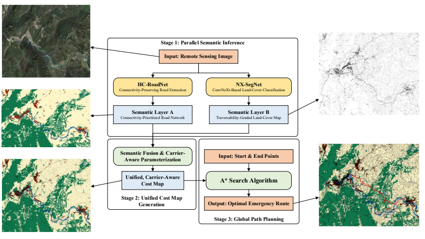

遥感与导航
基于光学遥感的导航路径规划
融合道路提取、地物覆盖分类与 A* 搜索，为复杂地貌下的应急路径规划构建统一代价图。
方法与应用
HC-RoadNet 提取道路网络，NX-SegNet 进行地物覆盖分类；随后融合路网通达性与地物可通行性，结合起终点进行路径搜索。

融合道路提取、地物覆盖分类与 A* 搜索，为复杂地貌下的应急路径规划构建统一代价图。
HC-RoadNet 提取道路网络，NX-SegNet 进行地物覆盖分类；随后融合路网通达性与地物可通行性，结合起终点进行路径搜索。
